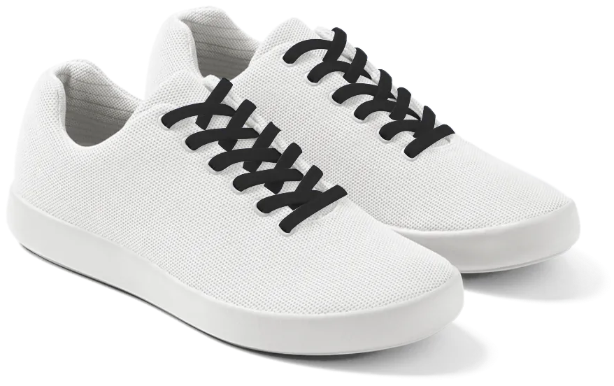
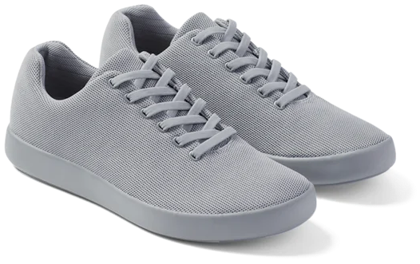
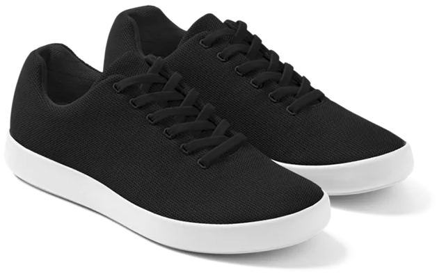
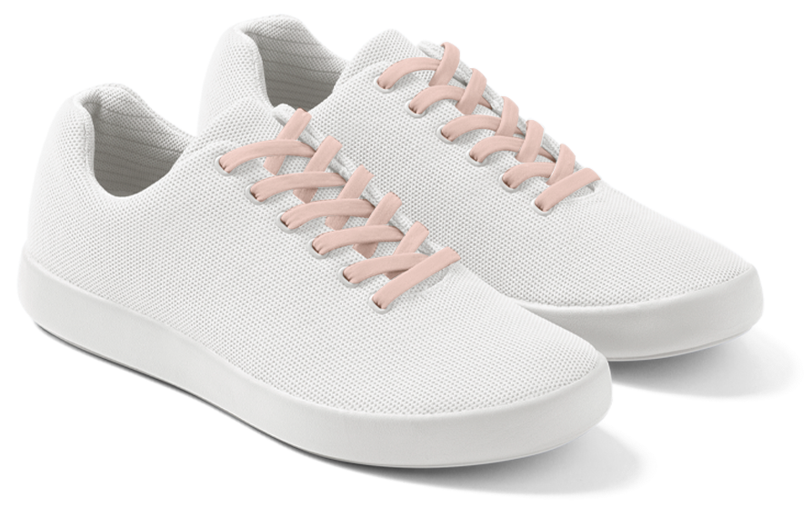

Modelos inovadores para jovens da área de tecnologia ou que trabalham em ambientes versáteis, que buscam tênis bonitos, modernos e confortáveis.
Nossos novos modelos já estão disponíveis, confira:
- 
- Modelo Work-flex
- Impermeável e resistente. Contém palmilha anatômica.
- R$150,00
- Cores disponíveis: branco, preto e cinza.
- 
- Modelo Work-grid
- Recomendado para caminhadas leves. Contém palmilha anatômica.
- R$130,00
- Cores disponíveis: branco, preto e cinza.
- 
- Modelo SmartDev
- Leve e prático para um dia a dia agitado.
- R$140,00
- Cores disponíveis: branco e preto.
- 
- Modelo Back-foot
- Inovador e estiloso. Resistente a água.
- R$160,00
- Cores disponíveis: branco, preto e cinza.